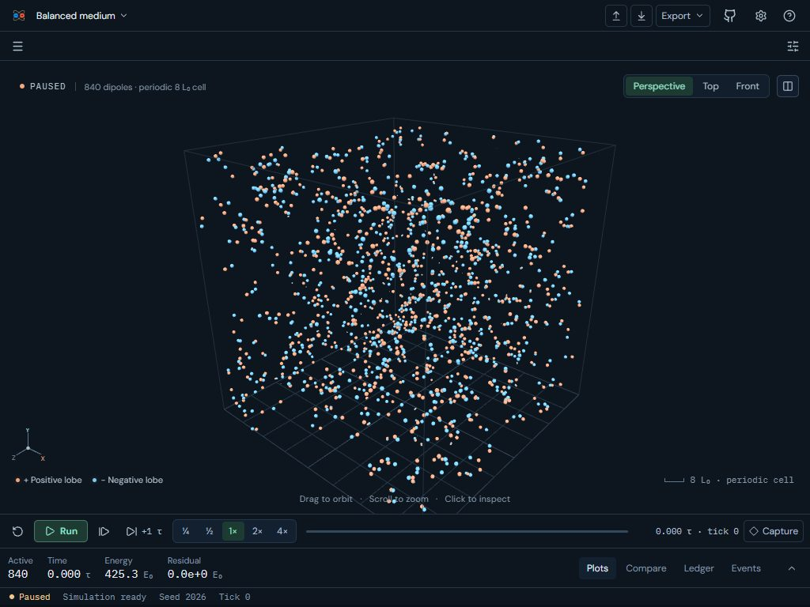
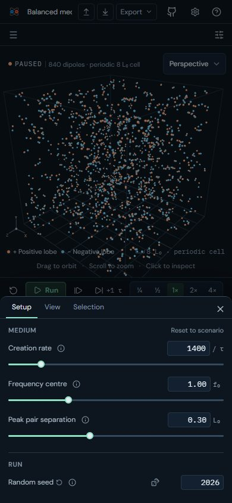
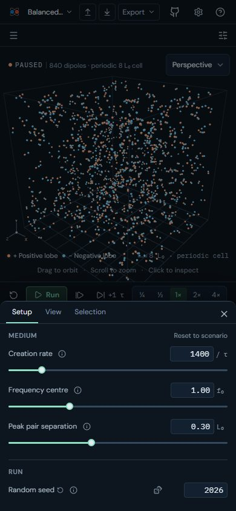
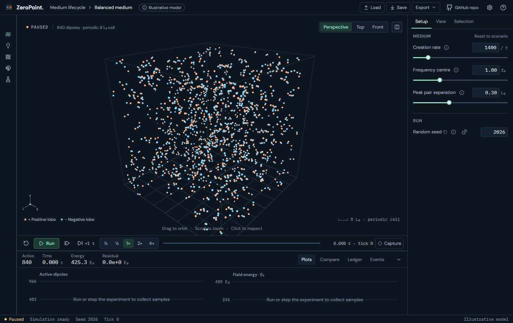

UI 19i: Scenario picker in the phone header: before and after
Plan §13 gives phones a header with a scenario picker (a sheet). On narrow layouts (phones and tablets, where the rail is a drawer) the scenario name in the header is now a button with ▾ that opens the experiment library; choosing a scenario closes it. Wide layouts are unchanged.
Real screens: "before" runs the layer below, and "after" runs this layer. Click an image to open it at full size. Regenerate with node scripts/compare-screens.mjs --before ../19h-remedial-casimir-parser --out docs/ui-previews/19i-phone-scenario-picker --set responsive --title 'UI 19i: Scenario picker in the phone header' --description 'Plan §13 gives phones a header with a scenario picker (a sheet). On narrow layouts (phones and tablets, where the rail is a drawer) the scenario name in the header is now a button with ▾ that opens the experiment library; choosing a scenario closes it. Wide layouts are unchanged.'.
Tablet · 1024 × 768: overlay rail and inspector, full-height viewport, dock collapsed to its strip



Phone · 390 × 844: the inspector as a bottom sheet; no split toggle




Laptop · 1366 × 860: the rail starts collapsed to icons

